DMU2026 · Undervisningsmateriale · Præsenteres af XBI
UI/UX & grafisk design
To lektioner á 45 minutter om at designe for mennesker — og om de værktøjer, der gør designet godt.
2 lektioner90 minutter i altLektion 1: Design, der taler til menneskerLektion 2: Designerværktøjskassen
Én rød tråd gennem begge lektioner
Lektion 1 — hvorforMennesket opfanger design gennem to kognitive systemer
Bro mellem lektionerneNorman-døren — I finder et brugerflade, der taler imod sig selv
Lektion 2 — hvordanFire værktøjer og tre principper til at rette på det
Fælles afslutningTjeklisten — seks spørgsmål til alt, I laver
Lektion 1 · 45 minutter
Design, der taler til mennesker
Vi kigger under motorhjelmen på brugeren: Hvordan opfanger hjernen et design? Hvad sker der, når det, et design siger, og det, det viser, ikke er enige? Vi arbejder med rigtige eksempler — og I skal selv på jagt efter dårligt design.
0–4 minVideo · Hook
To fag, ét hold
En UX-designer laver research, identificerer behov og laver taskflows og prototyper. En UI-designer komponerer layouts, skaffer visuals og bygger mockups. Videoen forkler forskellen med et klassisk eksempel: kage og glasur.
UX (User Experience) er den samlede oplevelse, når nogen bruger et produkt. UI (User Interface) er det visuelle lag, man rører ved. Usability — hvor godt det kan bruges — er en del af UX.
UI og usability er dele af UX — men UX er mere end det, man kan se.
Hvorfor er UX/UI vigtigt for DMU?
En programmør kan lave en teknisk perfekt netbank — men hvis brugeren ikke kan finde knappen “Overfør penge”, har systemet et UX-problem.
Casestudie · xbi @ B&O Struer
Sådan ser arbejdet ud i virkeligheden: produkterne skal se enkle ud — men app'en bag dem skal være endnu enklere at bruge.
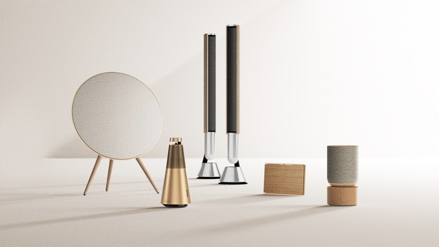
Hardware: rene former, få knapper, materialsynlige flader.
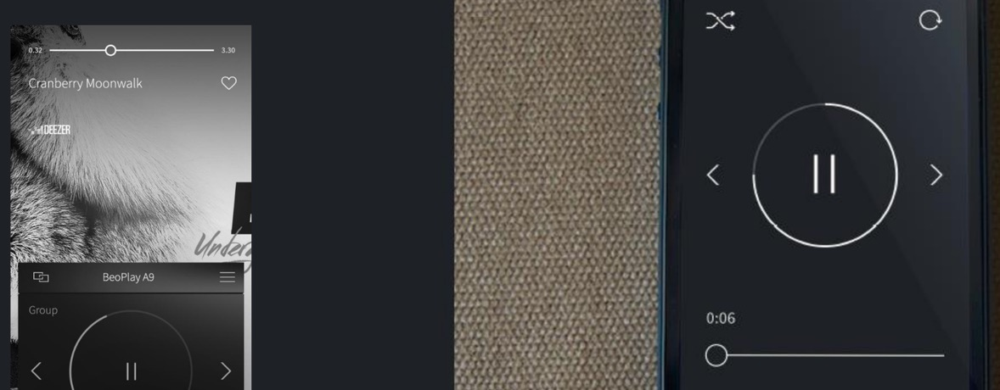
UI: musikutvalg, gruppering og afspilning samlet ién app.
9–21 minGruppeøvelse · 12 min
Øvelse A — Udforsk god UX
I bliver delt ind i shuffle-grupper
Hvad gør en oplevelse god?
Del jeres eksempler 5 min Tag jer eksempler på god UX (User Experience) og præsentér dem for hinanden.
Diskutér, hvad der gør UX'en god 7 min Forklar hvorfor. Overvej f.eks.:
Hvad gør oplevelsen særlig god?
Vækker den en bestemt følelse?
Er det måden, produktet fungerer eller bruges på?
Er det det visuelle design — looket og feelen?
Er det blot dejligt og nemt at bruge?
Lyt til hinanden — og diskutér, om I er enige.
21–30 minTeori
Hjernen har to typer kognitive ressourcer
Når du møder et design, arbejder der to systemer i din hjerne. Det ene er langsomt og bevidst. Det andet er hurtigt og automatisk — og det sidste får altid ordet først.
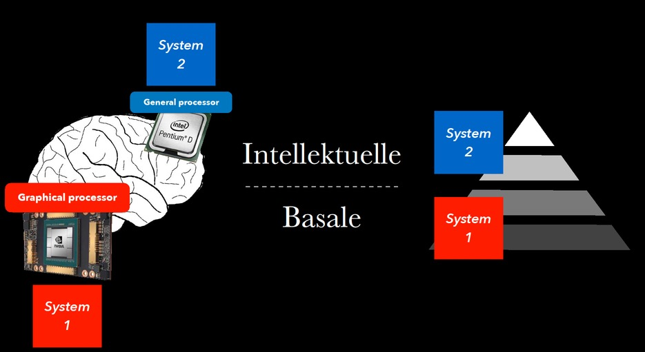
Hjernens to typer kognitive ressourcer: de intellektuelle og de basale.
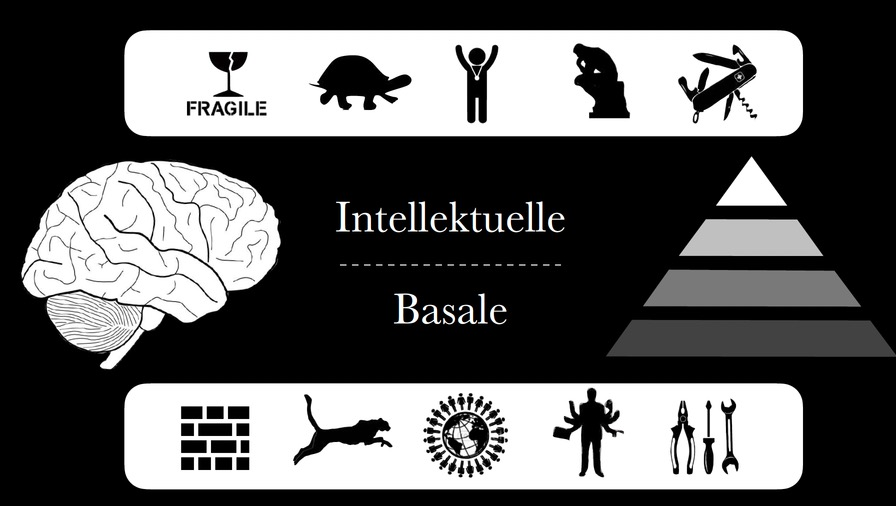
System 2 — generalprocessoren: analytisk, kræver energi. System 1 — grafiske processoren: visuel, automatisk.
De intellektuelle ressourcer er skrøbelige og kræver indsats. De basale er hurtige og intuitive.
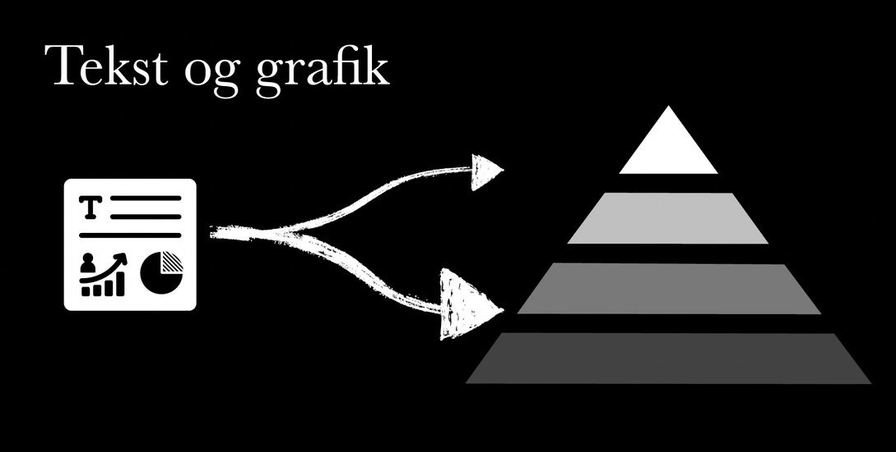
Tekst læses langsomt af System 2. Grafik opfattes øjeblikkeligt af System 1. God design bruger begge spor — det vigtigste skal være synligt, ikke kun skrevet.
30–37 minTeori & eksempler
Design, der taler med to stemmer
Et design kan sige to forskellige ting på én gang. …og den ene stemme vinder altid.
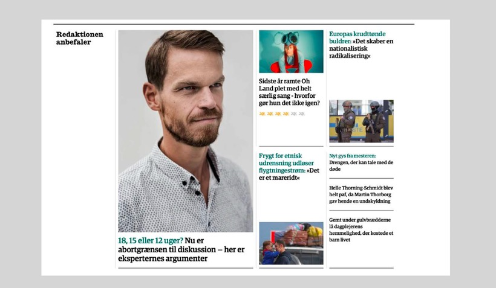
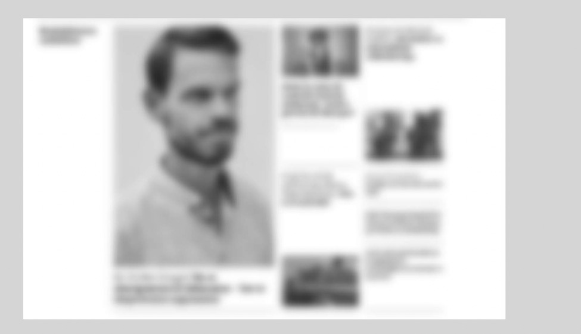
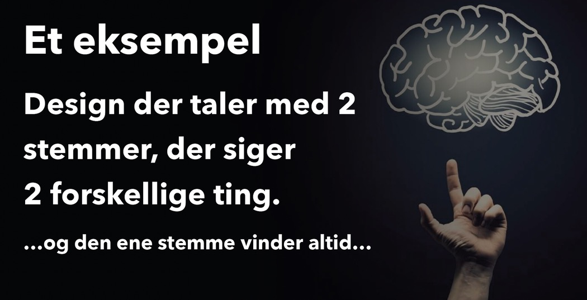
Den basale stemme vinder altid.
Inkongruens — når de to stemmer siger modsatte ting
Inkongruens mellem basale færdigheder og intellektuelle (semantiske) forventninger. Formularen lover simpel sikkerhed — men leverer røde fejlbokse, krav om en lang adgangskode og fejlbeskeder langt fra det felt, de handler om.
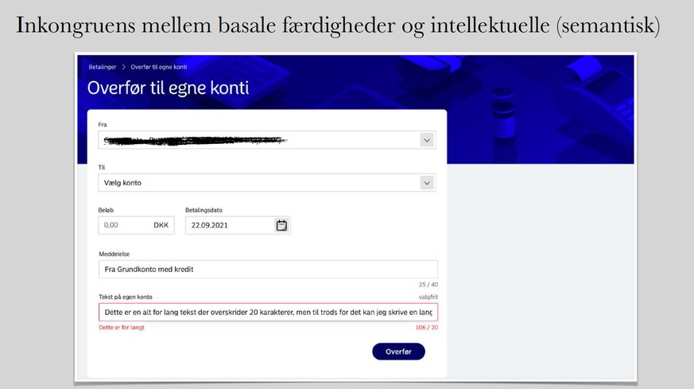
Det brugeren tænker (“jeg overfører til min egen konto”) og det brugeren oplever (rod, røde fejl) er ikke det samme.
37–45 minGruppeøvelse · 8 min
Øvelse B — Find din egen Norman-dør
En Norman-dør er en dør, der skriger “træk”, men som skal skubbes. Designfejl, du kan mærke, før du tænker. Din opgave er at finde din egen — en brugergrænseflade eller et system, der forvirrer dig.
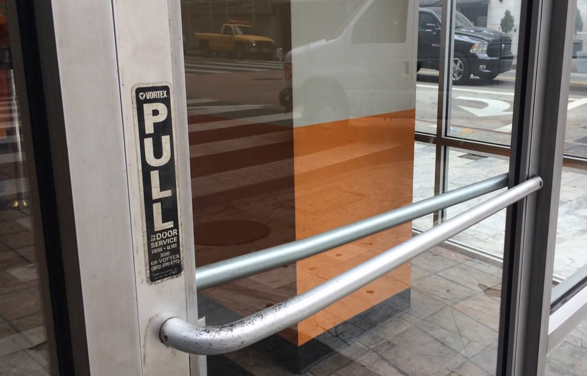
Signalet siger ét — grebet siger noget andet.
Trin 1 — Gå på jagt 10 min · inkl. lektie
Se dig omkring i skolen, hjemme eller på arbejdspladsen. Find et objekt eller en brugergrænseflade, der er forvirrende, frustrerende eller svær at bruge.
Trin 2 & 3 — lektie
Dokumentér: Hvad er problemet, og hvorfor sker det? Design derefter oplevelsen om, så den bliver mere intuitiv. Vi genkoster jeres fund i starten af lektion 2.
Tip
Hold tjeklisten fra lektion 2 i baghovedet, mens I jager — den bliver jeres redskab til at diagnosticere, hvad I finder.
Lektion 2 · 45 minutter
Designerværktøjskassen
Lektion 1 handlede om mennesket. Denne lektion handler om håndværket: de fire værktøjer, du altid har til rådighed, de principper, der holder dem sammen — og en fælles tjekliste til at vurdere dit eget og andres arbejde.
Redegøre for de fire grundlæggende værktøjer i grafisk design.
Skille mellem typeface og font — og vælge typografi med omtanke.
Anvende farveteori til at skabe harmoni, kontrast og fokus.
Bruge komposition, hierarki og harmoni til at forbedre et design.
0–5 minGenkomst: Norman-dør
15–20 minHvad er grafisk design?
0–5 minGenkost · Praksis
Genkomst: Din Norman-dør
2–3 grupper viser deres fund fra sidst. For hvert eksempel:
Hvad var problemet?
Hvorfor skete det — hvilken forventning blev brudt?
Hvad gjorde I anderledes i jeres redesign?
Overgang
I har nu set på, hvordan mennesket opfanger design. Resten af lektionen handler om de redskaber, I retter det til med.
Teori
Hvad er grafisk design?
“Det grundlæggende i grafisk design handler om at se — og forstå — hvordan det visuelle materiales egenskaber: former, billeder, farveteori, typografi og layout, virker og spiller sammen … og derefter at kunne vælge, hvilke kvaliteter der er relevante, engagerende og nyttige til at visualisere en idé eller løse et problem.”
Kort sagt: fire værktøjer, du altid har med dig.
TypografiType — skrifttyper
FarveColor
Linjer & formerLines & shapes
BillederImages
Teori
Typografi
Typografi er kunsten at arrangere bogstaver og tekst, så de er læsbare, klare og visuelt appellerende. Design med type handler ikke kun om bogstaverne — men også om luften omkring og imellem dem.
Terminologi
En typeface er en skriftfamilie — en familie af fonts.
For eksempel: Helvetica er en typeface, der indeholder følgende fonts: Helvetica Light · Helvetica Regular · Helvetica Bold.
Her er fire hovedkategorier af almindelige skrifttyper. De er designet til bestemte formål — brug dem forkert, og designet svigter.
Aa
Serif
Nemmest at læse. God til brødtekst. Kan give en formel tone.
Aa
Sans Serif
Lette at læse — også i små størrelser som billedtekster. Rene og moderne.
Aa
Display
Fede, dekorative stile til store titler og overskrifter. Fungerer dårligt til store tekstmængder.
Aa
Script
Mange af disse er vanskelige at læse. Brug sparsomt — og aldrig til store tekstmængder.
Farve er en integreret del af designet. Designere bruger farveteori til at få farverne til at arbejde for dem: harmoni, balance og kontrast. Farve sætter også stemningen — den vækker følelser og forstærker budskabet og brandidentiteten.
Analogous
Nabofarver på farvehjulet. Tendens til harmoni.
Complementary
Farver der ligger overfor hinanden. Energiske i samspil.
Monochrome
Samme farve i nyancer.
Desaturated
Mindre mættede farver.
Farver betyder også noget. Her er nogle af de associationer, farver typisk vækker:
Linjer — både tykke og tynde, placeret gennemtænkt på siden — fører brugerens blik og leder dem gennem indholdet. Linjetykkelse bærer betydning: tynde linjer kan forsvinde i baggrunden, tunge linjer kræver opmærksomhed. Linjer kan opdele en side i sektioner eller isolere et element. Designere bruger dem målrettet til at guide øjet.
Former
Cirkler, firkanter, trekanter og rektangler er byggestenene i logoer, ikoner, illustrationer og layouts. Former bærer også betydning:
Cirkler & buer
Organiske, venlige, imødekommende
Firkant & rektangel
Stabile og afbalancerede
Trekant
Bevægelse, energi, spænding
Billeder er en integreret del af designprocessen. Når du vælger og bruger billeder i et projekt, er det vigtigt at træffe de rigtige valg.
Teori
Principperne: komposition, hierarki & harmoni
Godt grafisk design følger disse principper for effektiv visuel kommunikation.
Komposition
Composition
Balance & proportion — vægt og forhold i layoutet
Alignment & proximity — hvad der hører sammen
White space — luften, der får indholdet til at træde frem
Focal point — det øjet lander på først
Hierarki
Hierarchy
Scale — størrelse i forhold til hinanden
Contrast — det, der skiller sig ud
Hierarki er en tydelig rækkefølge af vigtighed, så seeren ved, hvad der kommer først, andet og tredje. Kontrast er afgørende for, at tekst er tydelig og læselig.
Praksis & diagnose
Praksis: Plakat-diagnose
To plakater til samme arrangement — en landedemarked. Brug det, I lige har lært, til at sige præcis, hvad der er galt med dem.
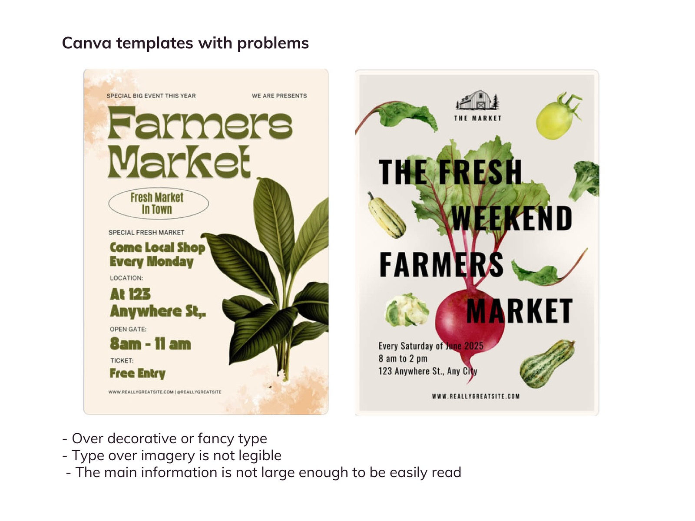
Hvad er galt? — Overflødig dekorativ “fancy” typografi · skrift ovenpå billeder er ulæselig · hovedinformationen er ikke stor nok til at læses nemt.
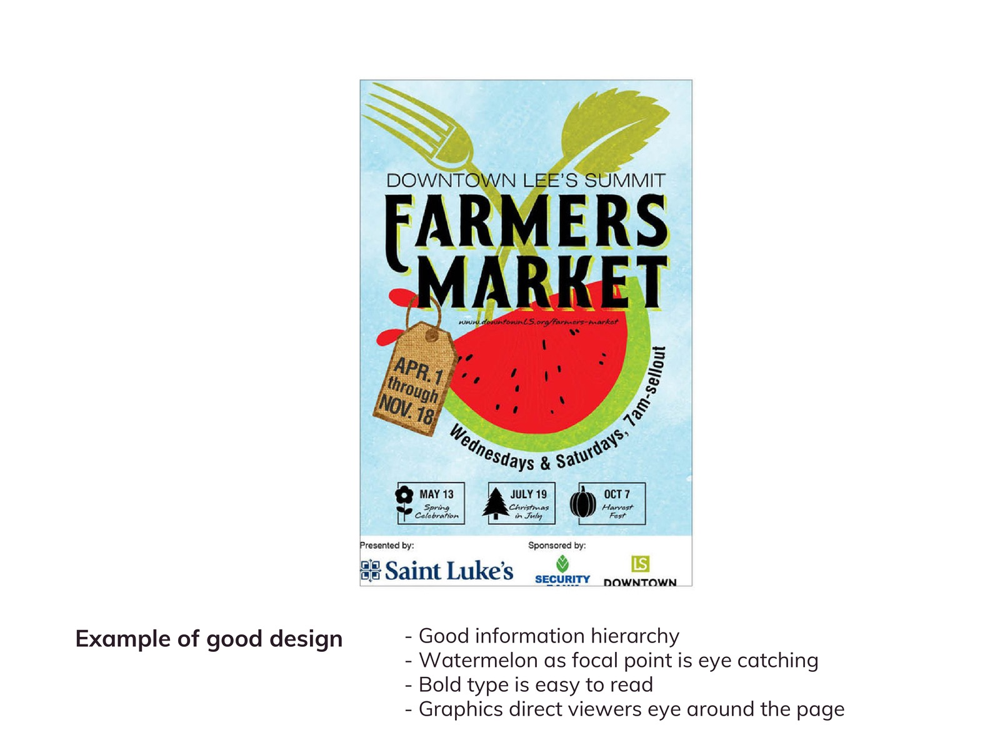
Hvad virker? — God informationshierarki · vandmelonen som fokuspunk er øjefangende · fed skrift er let at læse · grafikken fører øjet rundt på siden.
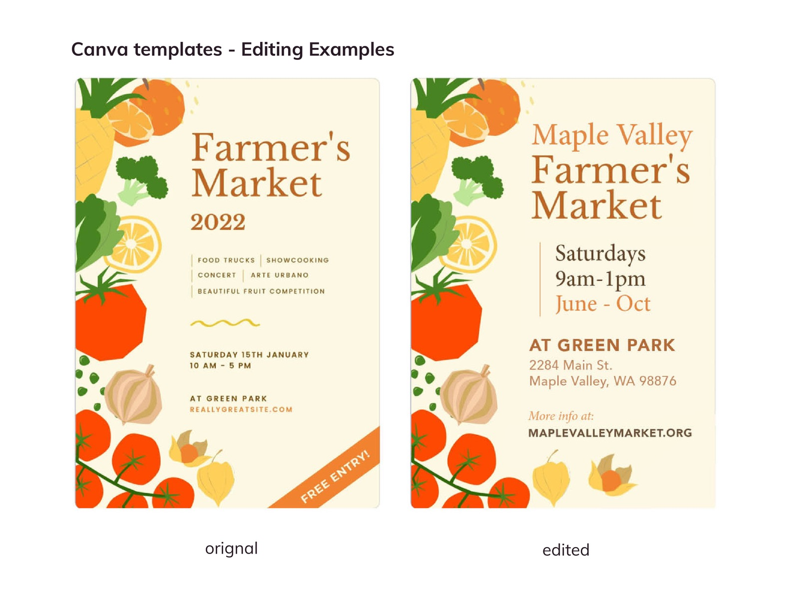
Sådan fixer man det: den samme skabelon, redigeret — færre elementer, stærkere hierarki, kortere information. “Original” vs. “redigeret”.
Tjeklisten
Best practices checklist — brug den på alt, du laver
Er hovedformålet med designet det første, man ser?
Er al relevant information med — nem at se og læse?
Passer tonen til formålet og målgruppen? Matcher den brandet?
Kan designet læses der, hvor de fleste vil se det?